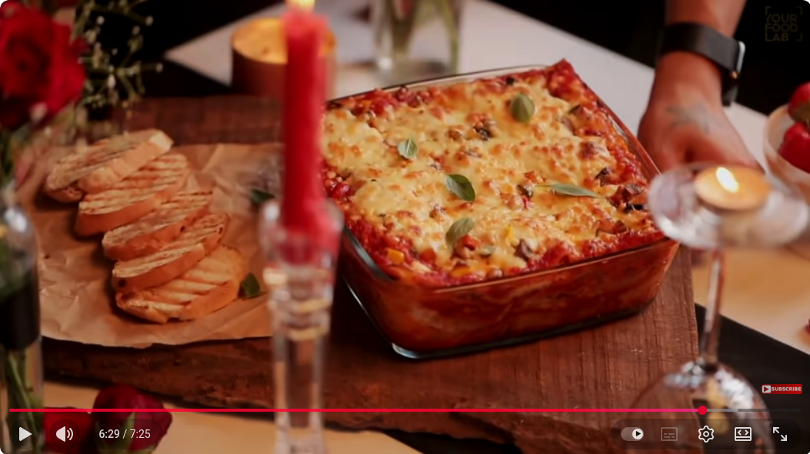

Lasagna Recipe
Home

This comforting lasagna layers tender roasted vegetables with a velvety
tomato-onion masala, gently perfumed with ginger, garlic, garam masala,
and a hint of chili heat. Creamy béchamel and soft ribbons of pasta
balance the spices, creating a dish that's rich, subtly spicy, and irresistibly
cozy, an East-meets-Italy twist perfect for slow evenings and shared tables.
Ingredients
- Oil
- Garlic
- Onions
- Red Chilli Powder
- Tomatoes Puree
- Sugar
- Tomato Ketchup
- Oregano
- Red Chilli Flakes
- Salt
- Black Pepper
- Butter
- Refined flour
- Milk
- Oregano
- Nutmeg Powder
- Processed Cheese (mozarella)
- Ginger
- Green Chillies (serrano or habanero)
- Carrot
- Mushroom
- Zucchini
- Corn kernels
- Bell pepper (Yellow, Green and Red)
- Broccoli
- Lasagna Sheets
- Lentils
Steps
Mise en place
First, let's get everything in order
- Mince 5-6 Garlic Cloves and 1 Medium Sized Onion, and put them together in a smal bowl
- Let 30 gm of butter soften in a small bowl
- Brunoise 2 tablespoons of garlic, 1 tbsp of ginger, 2-3 chillies and set them aside together
- Chop on small dices 1/3 cups of carrots and mushrooms
- Chop on small dices 2/3 cups of Zuchini, 1/3 cup of Corn, 1 cup of Bell pepper (different colors) and 1/3 cup of brocolli,
Red Sauce
- Set a sauce pan on low heat, add oil, garlic and onions, cook until onions are translucent.
- Add Kashmiri red chilli powder and cook briefly on low flame for 10-15 seconds.
- Now, add the tomato purée and the remaining ingredients, stir well and cook on medium high heat, cover and cook for 10-15 minutes.
White Sauce
- Set a pan on medium low heat, add butter and let it melt, add the flour and cook the flour for 2-3 minutes, remember not to burn the flour or changing the colour to brown, keep it light brown.
- Further add, milk in 3 batches and make sure to whisk well while adding milk to make a lump free sauce.
- Further add salt to taste, a pinch of black pepper powder, oregano and nutmeg powder, stir well.
- Now add processed cheese and stir well until the cheese melts. The white sauce is ready.
Stir Fried Veggies
- Set a wok on medium high heat, add olive oil, garlic, ginger and green chillies, cook for 1-2 minutes
- Further, add carrots and mushroom and cook for 1-2 minutes on high heat.
- Further add the remaining veggies and cook them for 1-2 minutes on high heat.
- Add salt & black pepper powder to taste, oregano, chilli flakes, toss and cook for 1-2 minutes, stir-fried veggies are ready, keep aside to be used later.
Assembly
- Spread little red sauce in a microwave safe bowl, add a lasagna sheet, further spread red sauce pasta and stir-fried veggies, spread a layer of white sauce and grate some cheese, layer it with lasagna sheets, repeat the layering process until there are seven layers formed. Or until it reaches your rim your baking dish.
- Do the final layering, by adding good amount of mozzarella or processed cheese.
- Preheat the oven and bake in convection + grill mode at 200 for 20 minutes or until the cheese browns.
- Lasagna is ready, cut in square and serve immediately with some garlic breads.
Home